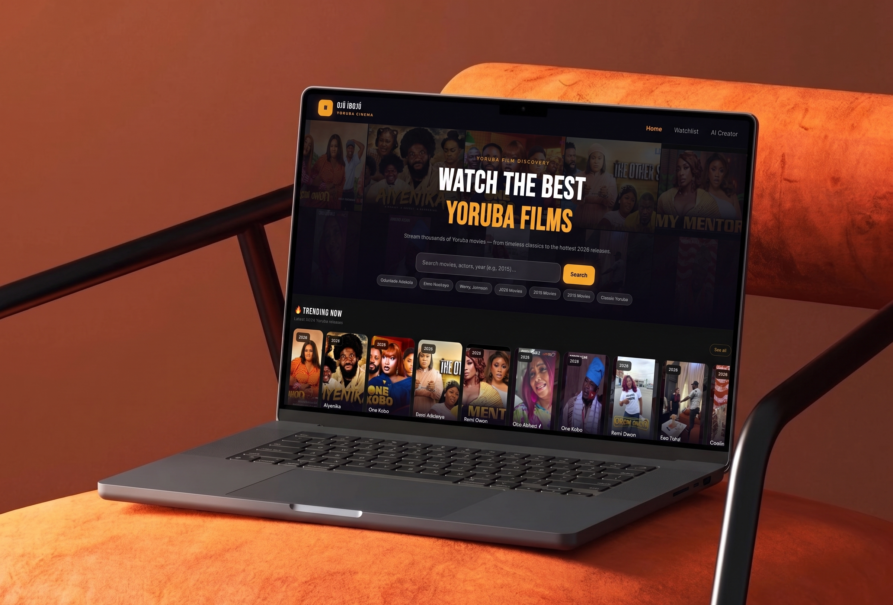
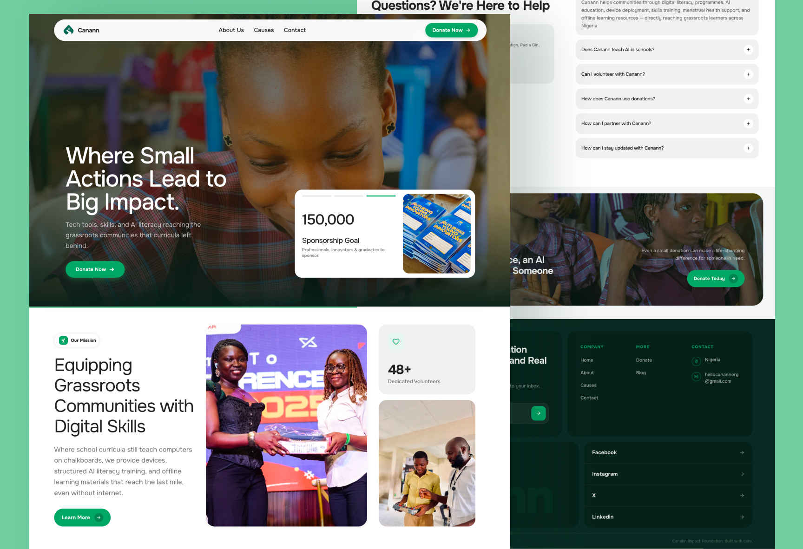
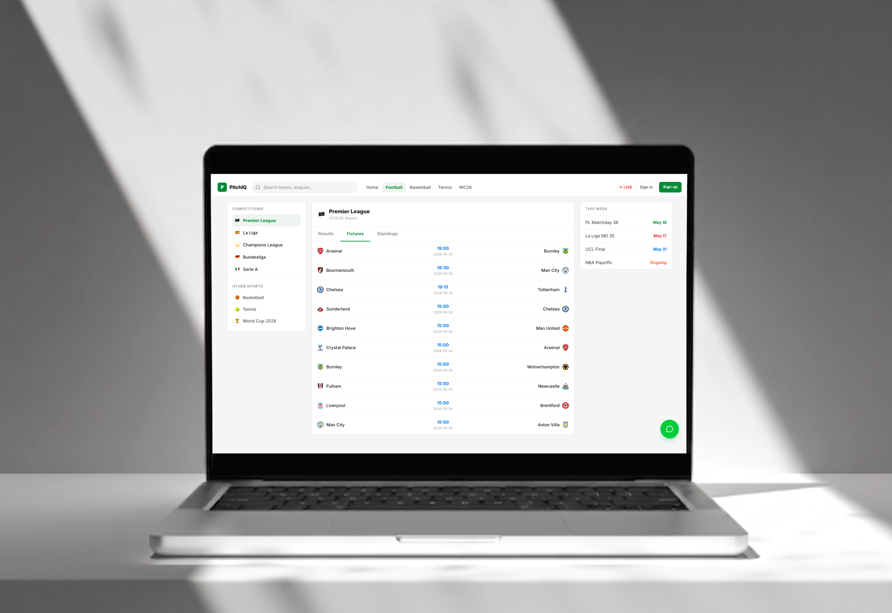

Selected work · 2025—2026
PRODUCTS
I'VE BUILT.
Real projects across product interfaces, full-stack applications, AI integrations and data-heavy experiences.
01 / PRODUCT ENGINEERING
Folde Studio
I work on the product frontend of an AI-powered HR platform — building onboarding flows, CV management, job feeds and employer dashboards, while also contributing to the studio's web presence.

02 / FULL-STACK PRODUCT
Ojú Ibojú / oh-JOO-ee-boh-joo /
A Yoruba cinema streaming platform I designed and built end to end. It combines a custom video experience, film discovery, a Node/Express backend and an AI-powered Film Creator using the Claude SDK.

03 / CLIENT PRODUCT
Canann Impact Foundation
A production website for a Nigerian NGO focused on digital access and skills training. I built the experience around clear programme storytelling, impact metrics and a multi-cause donation flow.

04 / DATA PRODUCT
PitchIQ
A real-time sports dashboard for live scores, results, standings and analysis. The project pushed me deeper into real-time data, state management and the challenge of keeping a dense interface useful without making it noisy.
